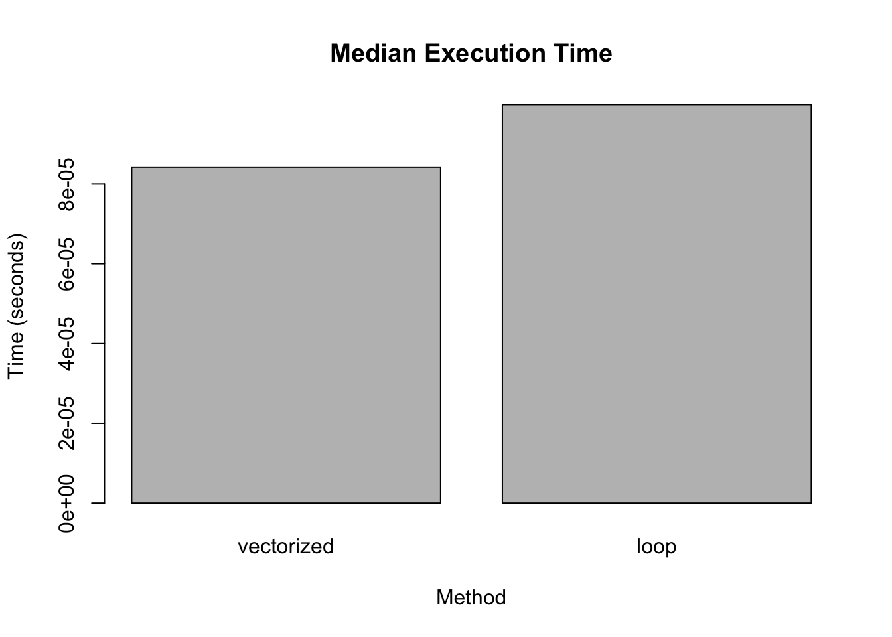
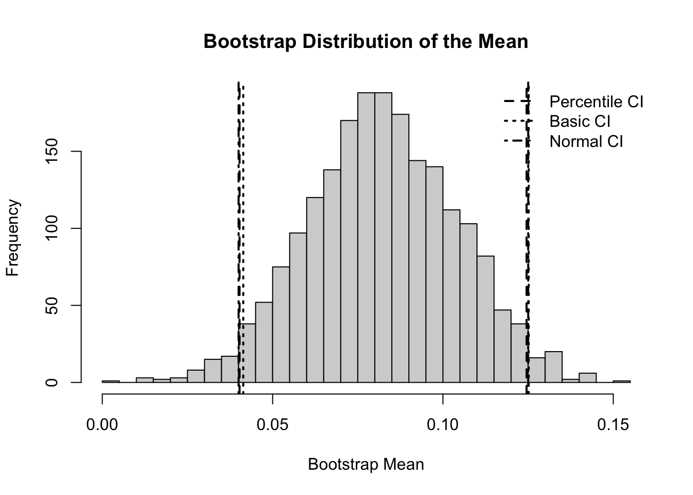
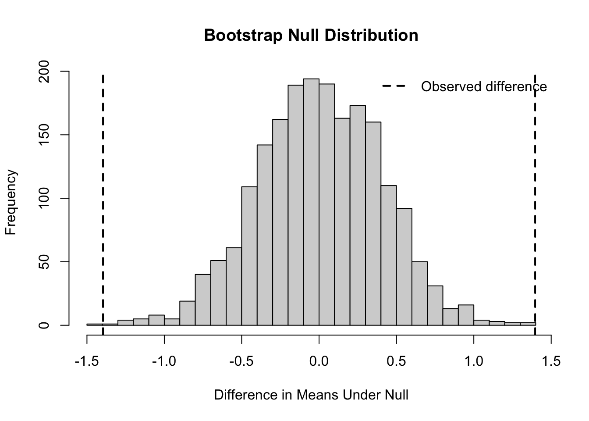

library(tidyverse)
library(bench)
library(palmerpenguins)
library(purrr)PHB228 Homework1
Part 1: Vectorization and Data Structures
1.1 Vectorization
(a)
vectorized_zscore <- function(x) {
(x - mean(x, na.rm = TRUE)) / sd(x, na.rm = TRUE)
}
loop_zscore <- function(x) {
m <- mean(x, na.rm = TRUE)
s <- sd(x, na.rm = TRUE)
z <- numeric(length(x))
for (i in seq_along(x)) {
z[i] <- (x[i] - m) / s
}
z
}
x_iris <- iris$Sepal.Length
head(vectorized_zscore(x_iris))[1] -0.8976739 -1.1392005 -1.3807271 -1.5014904 -1.0184372 -0.5353840head(loop_zscore(x_iris))[1] -0.8976739 -1.1392005 -1.3807271 -1.5014904 -1.0184372 -0.5353840all.equal(vectorized_zscore(x_iris), loop_zscore(x_iris))[1] TRUEFrom the output, both functions give the same z-scores. The vectorized version applies the formula to the whole vector at once, while the loop computes it one value at a time. Even though the results are the same, the implementation style is different.
(b)
bench_results <- bench::mark(
vectorized = vectorized_zscore(x_iris),
loop = loop_zscore(x_iris),
iterations = 50,
check = FALSE
)
bench_results# A tibble: 2 × 6
expression min median `itr/sec` mem_alloc `gc/sec`
<bch:expr> <bch:tm> <bch:tm> <dbl> <bch:byt> <dbl>
1 vectorized 83.3µs 84.2µs 11577. 5.61KB 0
2 loop 99µs 100µs 9961. 5.61KB 0median_times <- as.numeric(bench_results$median)
names(median_times) <- bench_results$expression
barplot(
median_times,
main = "Median Execution Time",
ylab = "Time (seconds)",
xlab = "Method"
)
From the benchmark results, the vectorized method is slightly faster than the loop. This makes sense because vectorized operations in R are optimized internally and avoid the overhead of explicit loops.
(c)
chick_growth <- ChickWeight %>%
group_by(Chick) %>%
arrange(Time, .by_group = TRUE) %>%
mutate(
Growth.Rate = (weight - lag(weight)) / (Time - lag(Time)),
Weight.Gain.Percent = (last(weight) - first(weight)) / first(weight) * 100
) %>%
ungroup()
chick_summary <- chick_growth %>%
group_by(Diet, Chick) %>%
summarize(
avg_growth_rate_chick = mean(Growth.Rate, na.rm = TRUE),
max_weight_chick = max(weight, na.rm = TRUE),
.groups = "drop"
) %>%
group_by(Diet) %>%
summarize(
average_growth_rate = mean(avg_growth_rate_chick, na.rm = TRUE),
mean_maximum_weight = mean(max_weight_chick, na.rm = TRUE),
.groups = "drop"
)
head(chick_growth)# A tibble: 6 × 6
weight Time Chick Diet Growth.Rate Weight.Gain.Percent
<dbl> <dbl> <ord> <fct> <dbl> <dbl>
1 39 0 18 1 NA -10.3
2 35 2 18 1 -2 -10.3
3 41 0 16 1 NA 31.7
4 45 2 16 1 2 31.7
5 49 4 16 1 2 31.7
6 51 6 16 1 1 31.7chick_summary# A tibble: 4 × 3
Diet average_growth_rate mean_maximum_weight
<fct> <dbl> <dbl>
1 1 5.37 158.
2 2 8.32 216.
3 3 11.0 272.
4 4 8.86 230.Growth.Rate shows how quickly each chick's weight changes between time points. Looking at the summary table, we can compare how different diets affect both growth rate and maximum weight.
1.2 Data Structures and Functional Programming
(a)
data(penguins, package = "palmerpenguins")
species_names <- unique(na.omit(penguins$species))
penguin_list <- lapply(species_names, function(sp) {
dat <- penguins[penguins$species == sp & !is.na(penguins$species), ]
attr(dat, "sample_size") <- nrow(dat)
dat
})
names(penguin_list) <- species_names
lapply(penguin_list, function(x) attr(x, "sample_size"))$Adelie
[1] 152
$Gentoo
[1] 124
$Chinstrap
[1] 68Each element of the list corresponds to one species. I also stored the sample size as an attribute so it's easy to check how many observations each group has.
(b)
numeric_penguins <- penguins %>%
select(where(is.numeric))
means_lapply <- lapply(numeric_penguins, mean, na.rm = TRUE)
means_map_dbl <- map_dbl(numeric_penguins, mean, na.rm = TRUE)
means_lapply$bill_length_mm
[1] 43.92193
$bill_depth_mm
[1] 17.15117
$flipper_length_mm
[1] 200.9152
$body_mass_g
[1] 4201.754
$year
[1] 2008.029means_map_dbl bill_length_mm bill_depth_mm flipper_length_mm body_mass_g
43.92193 17.15117 200.91520 4201.75439
year
2008.02907 lapply() returns a list, while map_dbl() returns a numeric vector. The numeric vector is easier to use directly in later calculations.
(c)
mean_mass_by_species <- tapply(
penguins$body_mass_g,
penguins$species,
mean,
na.rm = TRUE
)
mean_mass_by_species_sex <- tapply(
penguins$body_mass_g,
list(penguins$species, penguins$sex),
mean,
na.rm = TRUE
)
mean_mass_by_species Adelie Chinstrap Gentoo
3700.662 3733.088 5076.016 mean_mass_by_species_sex female male
Adelie 3368.836 4043.493
Chinstrap 3527.206 3938.971
Gentoo 4679.741 5484.836The first result gives the average body mass for each species. The second one breaks it down further by both species and sex, so we can see more detailed differences.
(d)
v <- c(1, 2, 3, 4, 5)
v_ref <- v
cat("Before modification:\n")Before modification:print(v)[1] 1 2 3 4 5print(v_ref)[1] 1 2 3 4 5cat("Identical before modification:", identical(v, v_ref), "\n")Identical before modification: TRUE v_ref[3] <- 99
cat("\nAfter modification:\n")
After modification:print(v)[1] 1 2 3 4 5print(v_ref)[1] 1 2 99 4 5cat("Identical after modification:", identical(v, v_ref), "\n")Identical after modification: FALSE At first, both variables refer to the same object. After modifying one of them, R creates a copy instead of changing the original. This is why only v_ref changes while v stays the same.
(e)
inefficient_code <- function() {
result <- numeric(0)
for (i in 1:10000) {
result <- c(result, i^2)
}
result
}
preallocated_code <- function() {
result <- numeric(10000)
for (i in 1:10000) {
result[i] <- i^2
}
result
}
time_inefficient <- system.time(inefficient_result <- inefficient_code())
time_preallocated <- system.time(preallocated_result <- preallocated_code())
time_inefficient user system elapsed
0.138 0.021 0.159 time_preallocated user system elapsed
0.002 0.000 0.003 all.equal(inefficient_result, preallocated_result)[1] TRUEThe preallocated version runs faster because the memory is allocated once at the beginning. In contrast, repeatedly using c() forces R to keep creating new copies, which slows things down.
Part 2: Matrix Operations and Decompositions
2.1 Matrix Operations
(a)
A <- matrix(c(4, 2, 1, 5), nrow = 2)
B <- matrix(c(3, 1, 0, 2), nrow = 2)
C <- matrix(c(1, 3, 5, 2, 4, 6), nrow = 2)
A [,1] [,2]
[1,] 4 1
[2,] 2 5B [,1] [,2]
[1,] 3 0
[2,] 1 2C [,1] [,2] [,3]
[1,] 1 5 4
[2,] 3 2 6A_plus_B <- A + B
A_elementwise_B <- A * B
A_matrix_B <- A %*% B
tA_matrix_C <- t(A) %*% C
A_inverse <- solve(A)
A_plus_B [,1] [,2]
[1,] 7 1
[2,] 3 7A_elementwise_B [,1] [,2]
[1,] 12 0
[2,] 2 10A_matrix_B [,1] [,2]
[1,] 13 2
[2,] 11 10tA_matrix_C [,1] [,2] [,3]
[1,] 10 24 28
[2,] 16 15 34A_inverse [,1] [,2]
[1,] 0.2777778 -0.05555556
[2,] -0.1111111 0.22222222A + B adds corresponding entries of the two matrices. A * B performs elementwise multiplication, while A %*% B performs matrix multiplication. The expression t(A) %*% C first transposes A and then multiplies it by C. Finally, solve(A) computes the inverse of A.
(b)
is_symmetric <- function(M) {
if (!is.matrix(M)) {
stop("Input must be a matrix.")
}
if (nrow(M) != ncol(M)) {
stop("Input matrix must be square.")
}
isTRUE(all.equal(M, t(M)))
}
is_symmetric(A)[1] FALSEis_symmetric(B)[1] FALSEis_symmetric(t(A) %*% A)[1] TRUEA matrix is symmetric if it is square and equal to its transpose. Both A and B are not symmetric, but t(A) %*% A is symmetric.
2.2 Eigenvalue Decomposition
(a)
M <- matrix(c(4, 2, 2, 3), nrow = 2)
eig_M <- eigen(M)
eig_M$values[1] 5.561553 1.438447eig_M$vectors [,1] [,2]
[1,] -0.7882054 0.6154122
[2,] -0.6154122 -0.7882054The eigen() function gives the eigenvalues and eigenvectors of M. I use these results in the next step to check whether M %% x equals lambda x.
(b)
for (i in seq_along(eig_M$values)) {
lambda <- eig_M$values[i]
x_vec <- eig_M$vectors[, i]
left_side <- M %*% x_vec
right_side <- lambda * x_vec
cat("Eigenpair", i, "\n")
print(left_side)
print(right_side)
print(all.equal(as.numeric(left_side), as.numeric(right_side)))
}Eigenpair 1
[,1]
[1,] -4.383646
[2,] -3.422648
[1] -4.383646 -3.422648
[1] TRUE
Eigenpair 2
[,1]
[1,] 0.885238
[2,] -1.133792
[1] 0.885238 -1.133792
[1] TRUEFor each eigenvalue-eigenvector pair, the equation M %*% x = lambda * x holds up to small numerical rounding error.
(c)
P <- eig_M$vectors
D <- diag(eig_M$values)
M_reconstructed <- P %*% D %*% solve(P)
M [,1] [,2]
[1,] 4 2
[2,] 2 3M_reconstructed [,1] [,2]
[1,] 4 2
[2,] 2 3all.equal(M, M_reconstructed)[1] TRUEThe reconstructed matrix matches the original matrix, which confirms that the eigenvalue decomposition M = P D P^{-1}.
2.3 SVD and QR Decomposition
(a) SVD
X <- matrix(c(3, 2, 2, 2, 3, -2, 2, -2, 3), nrow = 3)
svd_X <- svd(X)
svd_X$d[1] 5 5 1svd_X$u [,1] [,2] [,3]
[1,] 2.397536e-16 -0.8164966 0.5773503
[2,] -7.071068e-01 -0.4082483 -0.5773503
[3,] 7.071068e-01 -0.4082483 -0.5773503svd_X$v [,1] [,2] [,3]
[1,] 0.0000000 -0.8164966 -0.5773503
[2,] -0.7071068 -0.4082483 0.5773503
[3,] 0.7071068 -0.4082483 0.5773503rank1_X <- svd_X$d[1] * svd_X$u[, 1] %*% t(svd_X$v[, 1])
frobenius_error <- norm(X - rank1_X, type = "F")
X [,1] [,2] [,3]
[1,] 3 2 2
[2,] 2 3 -2
[3,] 2 -2 3rank1_X [,1] [,2] [,3]
[1,] 0 -8.47657e-16 8.47657e-16
[2,] 0 2.50000e+00 -2.50000e+00
[3,] 0 -2.50000e+00 2.50000e+00frobenius_error[1] 5.09902The rank-1 approximation keeps only the largest singular value. Since the smaller singular values are left out, the reconstruction is not exact and the Frobenius error is not zero.
(b) QR and Least Squares
set.seed(228)
n <- 100
x <- runif(n, -5, 5)
y <- 3 + 2 * x + rnorm(n, sd = 1)
X_design <- cbind(1, x)
qr_X <- qr(X_design)
Q <- qr.Q(qr_X)
R <- qr.R(qr_X)
beta_qr <- solve(R) %*% t(Q) %*% y
lm_fit <- lm(y ~ x)
beta_qr [,1]
2.985095
x 1.950611coef(lm_fit)(Intercept) x
2.985095 1.950611 all.equal(as.numeric(beta_qr), as.numeric(coef(lm_fit)))[1] TRUEThe QR solution gives the same least squares estimates as lm(), up to numerical rounding. QR decomposition is useful for least squares because it avoids explicitly forming X^T X, which improves numerical stability.
Part 3: Optimization and Simulation
3.1 Gradient Descent
(a)
rosenbrock <- function(x) {
x1 <- x[1]
x2 <- x[2]
(1 - x1)^2 + 100 * (x2 - x1^2)^2
}
rosenbrock(c(-1.2, 1.0))[1] 24.2This evaluates the Rosenbrock function at a given point, which is commonly used as a test problem for optimization.
(b)
rosenbrock_grad <- function(x) {
x1 <- x[1]
x2 <- x[2]
grad_x1 <- -2 * (1 - x1) - 400 * x1 * (x2 - x1^2)
grad_x2 <- 200 * (x2 - x1^2)
c(grad_x1, grad_x2)
}
rosenbrock_grad(c(-1.2, 1.0))[1] -215.6 -88.0The gradient tells us the direction of the steepest increase, so moving in the opposite direction helps minimize the function.
(c)
gradient_descent <- function(init, grad_fn, learning_rate, max_iter, tol) {
x <- init
for (iter in 1:max_iter) {
grad <- grad_fn(x)
if (sqrt(sum(grad^2)) < tol) {
return(list(
solution = x,
value = rosenbrock(x),
iterations = iter,
converged = TRUE
))
}
x <- x - learning_rate * grad
}
list(
solution = x,
value = rosenbrock(x),
iterations = max_iter,
converged = FALSE
)
}The algorithm updates the parameters step by step using the gradient. It stops when the gradient becomes very small or when it reaches the maximum number of iterations.
(d)
gd_result <- gradient_descent(
init = c(-1.2, 1.0),
grad_fn = rosenbrock_grad,
learning_rate = 0.001,
max_iter = 10000,
tol = 1e-6
)
gd_result$solution
[1] 0.9923558 0.9847394
$value
[1] 5.852761e-05
$iterations
[1] 10000
$converged
[1] FALSEFrom the result, the algorithm moves toward the minimum near (1, 1). The output shows the final estimate and whether it converged.
3.2 Comparison with Built-in Methods
(a)
bfgs_result <- optim(
par = c(-1.2, 1.0),
fn = rosenbrock,
gr = rosenbrock_grad,
method = "BFGS"
)
bfgs_result$par
[1] 1 1
$value
[1] 9.594956e-18
$counts
function gradient
110 43
$convergence
[1] 0
$message
NULLBFGS converges faster because it uses gradient information and approximates curvature, making it more efficient than basic gradient descent.
(b)
nelder_result <- optim(
par = c(-1.2, 1.0),
fn = rosenbrock,
method = "Nelder-Mead"
)
method_comparison <- tibble(
method = c("Gradient Descent", "BFGS", "Nelder-Mead"),
x1 = c(gd_result$solution[1], bfgs_result$par[1], nelder_result$par[1]),
x2 = c(gd_result$solution[2], bfgs_result$par[2], nelder_result$par[2]),
function_value = c(gd_result$value, bfgs_result$value, nelder_result$value),
iterations = c(gd_result$iterations, bfgs_result$counts["function"], nelder_result$counts["function"]),
distance_to_true_min = c(
sqrt(sum((gd_result$solution - c(1, 1))^2)),
sqrt(sum((bfgs_result$par - c(1, 1))^2)),
sqrt(sum((nelder_result$par - c(1, 1))^2))
)
)
method_comparison# A tibble: 3 × 6
method x1 x2 function_value iterations distance_to_true_min
<chr> <dbl> <dbl> <dbl> <dbl> <dbl>
1 Gradient Descent 0.992 0.985 5.85e- 5 10000 0.0171
2 BFGS 1.000 1.000 9.59e-18 110 0.00000000693
3 Nelder-Mead 1.00 1.00 8.83e- 8 195 0.000569 All methods aim to find the same minimum. BFGS usually performs best, while Nelder-Mead works without gradients but may take longer. Gradient descent is simpler but depends on the learning rate.
3.3 Simulation Study
(a)
run_simulation <- function(n_samples, n_reps, dist_type) {
results <- vector("list", n_reps)
for (i in 1:n_reps) {
if (dist_type == "normal") {
sample_data <- rnorm(n_samples, mean = 0, sd = 1)
} else if (dist_type == "t3") {
sample_data <- rt(n_samples, df = 3)
} else if (dist_type == "contaminated") {
indicator <- rbinom(n_samples, size = 1, prob = 0.10)
sample_data <- ifelse(
indicator == 1,
rnorm(n_samples, mean = 0, sd = 10),
rnorm(n_samples, mean = 0, sd = 1)
)
} else {
stop("Unknown distribution type.")
}
results[[i]] <- tibble(
dist_type = dist_type,
mean_est = mean(sample_data),
median_est = median(sample_data),
trimmed_mean_est = mean(sample_data, trim = 0.10)
)
}
bind_rows(results)
}This function simulates data repeatedly and computes different estimators so we can compare their behavior.
(b)
set.seed(228)
sim_normal <- run_simulation(30, 1000, "normal")
sim_t3 <- run_simulation(30, 1000, "t3")
sim_contaminated <- run_simulation(30, 1000, "contaminated")
sim_all <- bind_rows(sim_normal, sim_t3, sim_contaminated)
sim_long <- sim_all %>%
pivot_longer(
cols = c(mean_est, median_est, trimmed_mean_est),
names_to = "estimator",
values_to = "estimate"
)
simulation_summary <- sim_long %>%
group_by(dist_type, estimator) %>%
summarize(
bias = mean(estimate) - 0,
variance = var(estimate),
mse = mean((estimate - 0)^2),
.groups = "drop"
)
simulation_summary# A tibble: 9 × 5
dist_type estimator bias variance mse
<chr> <chr> <dbl> <dbl> <dbl>
1 contaminated mean_est 0.00287 0.370 0.370
2 contaminated median_est 0.0107 0.0586 0.0587
3 contaminated trimmed_mean_est 0.00350 0.0526 0.0526
4 normal mean_est 0.00241 0.0317 0.0317
5 normal median_est 0.0109 0.0456 0.0457
6 normal trimmed_mean_est 0.00290 0.0326 0.0326
7 t3 mean_est -0.0260 0.105 0.105
8 t3 median_est -0.0148 0.0576 0.0577
9 t3 trimmed_mean_est -0.0159 0.0566 0.0568The true center is 0 for all three simulated distributions, so bias and MSE are calculated relative to 0.
(c)
simulation_summary# A tibble: 9 × 5
dist_type estimator bias variance mse
<chr> <chr> <dbl> <dbl> <dbl>
1 contaminated mean_est 0.00287 0.370 0.370
2 contaminated median_est 0.0107 0.0586 0.0587
3 contaminated trimmed_mean_est 0.00350 0.0526 0.0526
4 normal mean_est 0.00241 0.0317 0.0317
5 normal median_est 0.0109 0.0456 0.0457
6 normal trimmed_mean_est 0.00290 0.0326 0.0326
7 t3 mean_est -0.0260 0.105 0.105
8 t3 median_est -0.0148 0.0576 0.0577
9 t3 trimmed_mean_est -0.0159 0.0566 0.0568The mean works well for normal data, but for heavy-tailed or contaminated data, the median and trimmed mean are more stable because they are less affected by outliers.
Part 4: Bootstrap Methods
4.1 Bootstrap Confidence Intervals
(a)
bootstrap_mean <- function(data, B = 2000, ci_type = "percentile", conf = 0.95) {
n <- length(data)
theta_hat <- mean(data)
boot_means <- replicate(B, {
boot_sample <- sample(data, size = n, replace = TRUE)
mean(boot_sample)
})
alpha <- 1 - conf
se <- sd(boot_means)
if (ci_type == "percentile") {
ci <- quantile(boot_means, probs = c(alpha / 2, 1 - alpha / 2))
} else if (ci_type == "basic") {
q <- quantile(boot_means, probs = c(1 - alpha / 2, alpha / 2))
ci <- 2 * theta_hat - q
} else if (ci_type == "normal") {
ci <- c(theta_hat - qnorm(1 - alpha / 2) * se,
theta_hat + qnorm(1 - alpha / 2) * se)
} else {
stop("Unknown CI type.")
}
list(
estimate = theta_hat,
se = se,
ci_type = ci_type,
lower = as.numeric(ci[1]),
upper = as.numeric(ci[2]),
boot_means = boot_means
)
}
set.seed(42)
returns <- rnorm(50, mean = 0.08, sd = 0.12)
returns <- returns + rexp(50, rate = 20) - 0.05
set.seed(228)
boot_percentile <- bootstrap_mean(returns, B = 2000, ci_type = "percentile")
boot_basic <- bootstrap_mean(returns, B = 2000, ci_type = "basic")
boot_normal <- bootstrap_mean(returns, B = 2000, ci_type = "normal")
bootstrap_ci_table <- tibble(
method = c("percentile", "basic", "normal"),
estimate = c(boot_percentile$estimate, boot_basic$estimate, boot_normal$estimate),
se = c(boot_percentile$se, boot_basic$se, boot_normal$se),
lower = c(boot_percentile$lower, boot_basic$lower, boot_normal$lower),
upper = c(boot_percentile$upper, boot_basic$upper, boot_normal$upper)
)
bootstrap_ci_table# A tibble: 3 × 5
method estimate se lower upper
<chr> <dbl> <dbl> <dbl> <dbl>
1 percentile 0.0825 0.0218 0.0403 0.125
2 basic 0.0825 0.0218 0.0414 0.125
3 normal 0.0825 0.0217 0.0400 0.125The table reports the bootstrap standard error and the 95% confidence interval for the mean using percentile, basic, and normal bootstrap methods.
(b)
hist(
boot_percentile$boot_means,
breaks = 30,
main = "Bootstrap Distribution of the Mean",
xlab = "Bootstrap Mean"
)
abline(v = c(boot_percentile$lower, boot_percentile$upper), lty = 2, lwd = 2)
abline(v = c(boot_basic$lower, boot_basic$upper), lty = 3, lwd = 2)
abline(v = c(boot_normal$lower, boot_normal$upper), lty = 4, lwd = 2)
legend(
"topright",
legend = c("Percentile CI", "Basic CI", "Normal CI"),
lty = c(2, 3, 4),
lwd = 2,
bty = "n"
)
The bootstrap distribution looks slightly skewed, but the three intervals are very close. I would use the percentile interval here because it follows the empirical bootstrap distribution directly and does not require a normality assumption.
4.2 Bootstrap Hypothesis Testing
(a)
bootstrap_ttest <- function(control, treatment, B = 2000) {
observed_diff <- mean(treatment) - mean(control)
pooled_mean <- mean(c(control, treatment))
control_null <- control - mean(control) + pooled_mean
treatment_null <- treatment - mean(treatment) + pooled_mean
boot_diffs <- replicate(B, {
boot_control <- sample(control_null, size = length(control), replace = TRUE)
boot_treatment <- sample(treatment_null, size = length(treatment), replace = TRUE)
mean(boot_treatment) - mean(boot_control)
})
p_value <- mean(abs(boot_diffs) >= abs(observed_diff))
list(
observed_diff = observed_diff,
boot_diffs = boot_diffs,
p_value = p_value
)
}
set.seed(123)
control <- rnorm(40, mean = 10, sd = 2)
treatment <- rnorm(40, mean = 11.5, sd = 2)
set.seed(228)
boot_test <- bootstrap_ttest(control, treatment, B = 2000)
boot_test$observed_diff[1] 1.396202boot_test$p_value[1] 5e-04hist(
boot_test$boot_diffs,
breaks = 30,
main = "Bootstrap Null Distribution",
xlab = "Difference in Means Under Null"
)
abline(v = boot_test$observed_diff, lwd = 2, lty = 2)
abline(v = -boot_test$observed_diff, lwd = 2, lty = 2)
legend(
"topright",
legend = "Observed difference",
lty = 2,
lwd = 2,
bty = "n"
)
The bootstrap test estimates the null distribution of the difference in means by resampling after centering the two groups to have the same mean. The p-value is calculated as the proportion of bootstrap null differences at least as extreme as the observed difference.
(b)
standard_ttest <- t.test(treatment, control)
standard_ttest
Welch Two Sample t-test
data: treatment and control
t = 3.3597, df = 77.656, p-value = 0.001212
alternative hypothesis: true difference in means is not equal to 0
95 percent confidence interval:
0.5688065 2.2235966
sample estimates:
mean of x mean of y
11.48657 10.09037 boot_test$p_value[1] 5e-04Both methods lead to similar conclusions here. The t-test relies on assumptions, while the bootstrap method is more flexible and does not depend on normality as strongly.
Resources Used
I used course materials and R documentation for functions such as bench::mark(), eigen(), svd(), qr(), and optim().